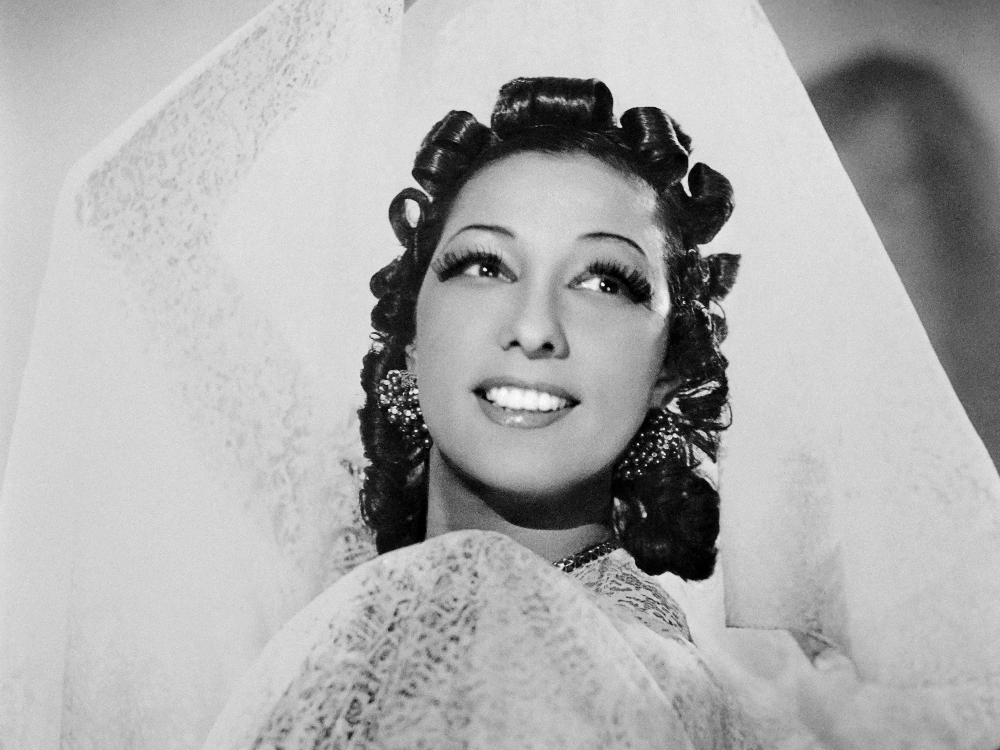
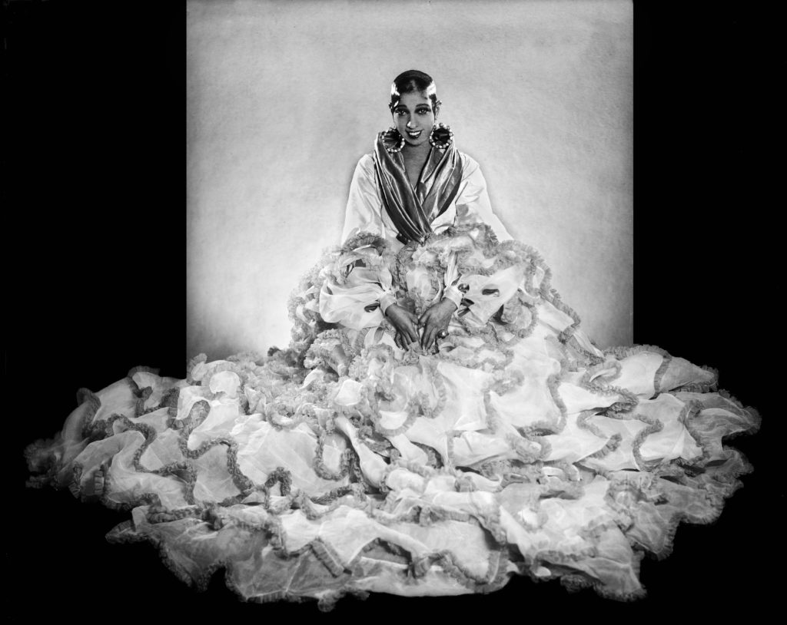

Josephine Baker
She began as a dancer and singer, moving from St. Louis to NYC to Paris in 1925. Her talents led to a film career and global tours. Amidst it all, she served as a WW2 spy and later became a captain in the French Air Force. Her heart was as vast as her achievements — she adopted 12 children and marched alongside Martin Luther King Jr. at the 1963 Washington March. Her final performance in 1975 marked the end of an extraordinary life filled with artistry, bravery, and boundless love.


